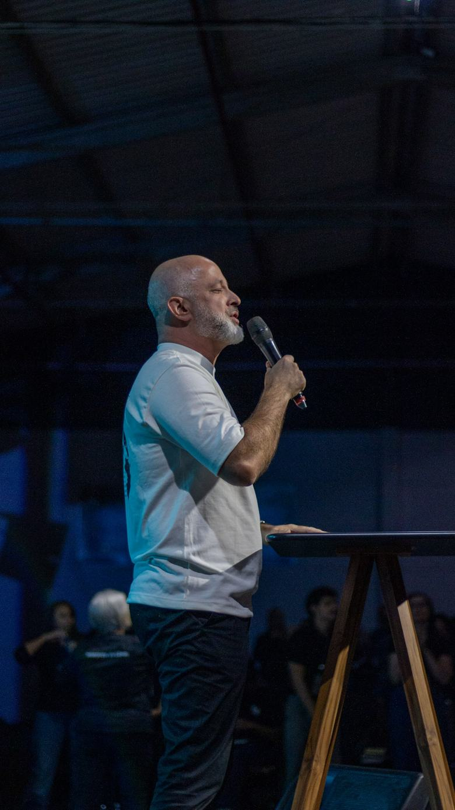
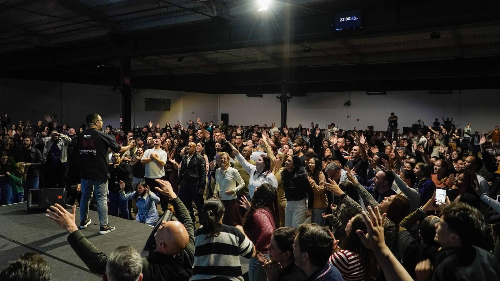
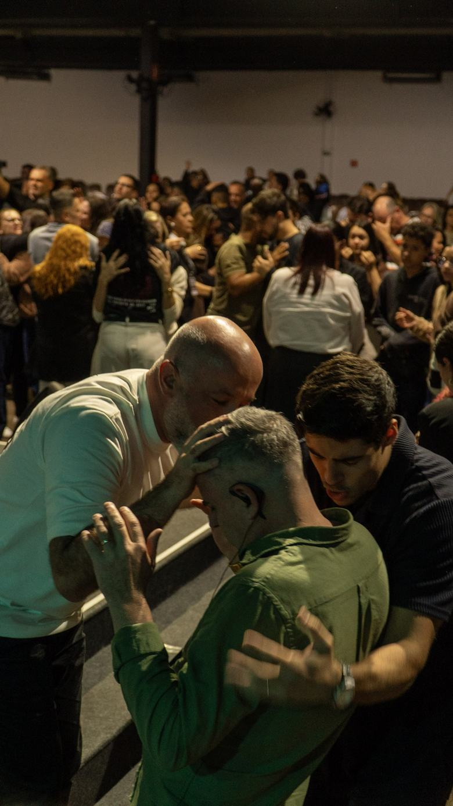
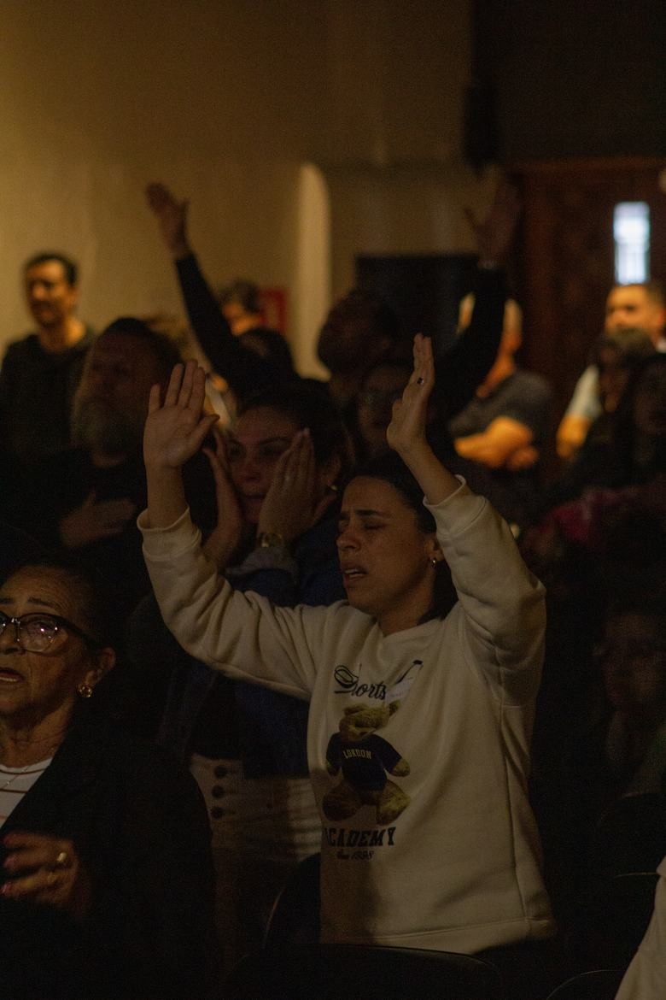
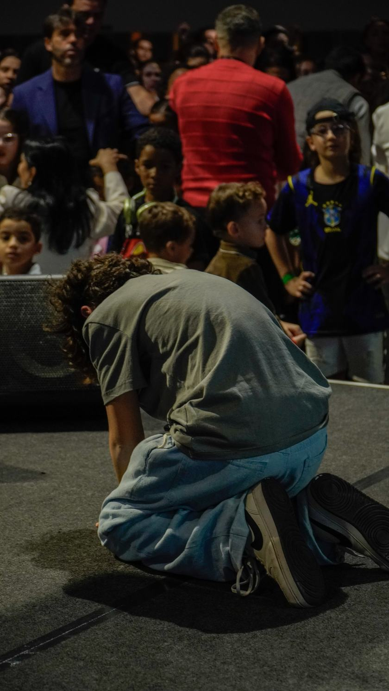
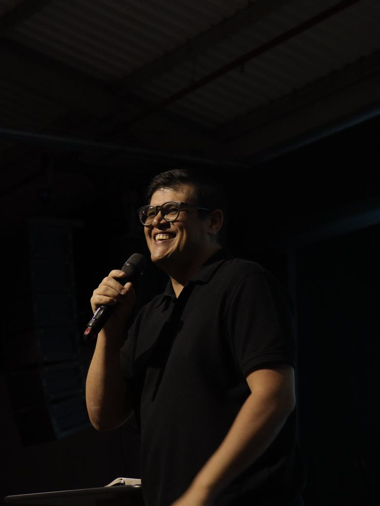
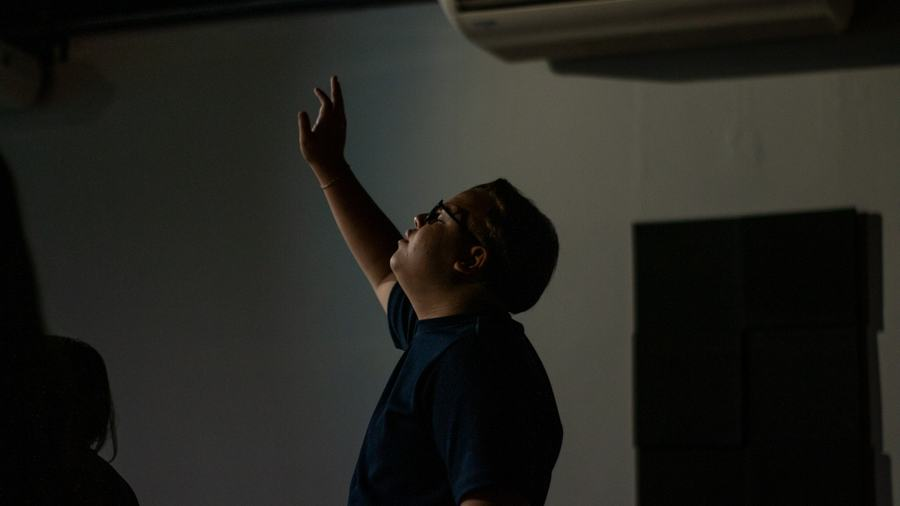
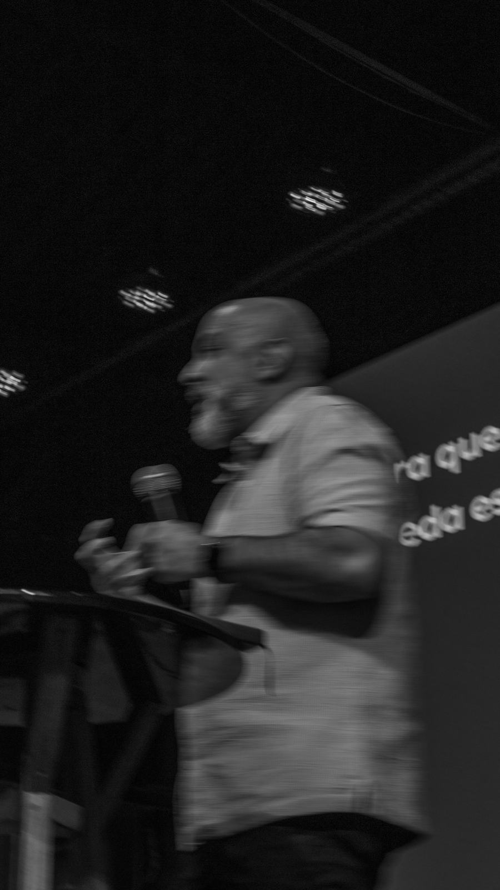

A PALAVRAFundamento firme
Ensino bíblico que edifica a fé e conduz a um encontro real com Deus.

Cremos que, ao tocar em Jesus, é gerada conexão e liberada virtude — trazendo cura, restauração e poder. Aqui, vidas encontram um lugar de fé, família e pertencimento.
Uma igreja baseada em família, excelência, no sobrenatural de Deus, pastoreio e discipulado — caminhando firme na Palavra.

A PALAVRAEnsino bíblico que edifica a fé e conduz a um encontro real com Deus.

O ENCONTROMomentos de adoração onde o sobrenatural de Deus toca e restaura vidas.

COMUNHÃODiscipulado e amizade de verdade — cuidado mútuo que faz a igreja virar família.
Kids e estacionamento disponíveis em todos os horários. Venha como você está.

a orla de JesusNosso símbolo nasce da história da mulher que, no meio da multidão, estendeu a mão e tocou a orla da veste de Jesus. Naquele instante, a virtude foi liberada e ela foi curada. É essa a nossa fé: basta um toque.
“Chegando por detrás dele, tocou na orla da sua veste, e logo estancou o fluxo do seu sangue.” — Lucas 8.44
Cuidado e ensino bíblico para as crianças, com check-in seguro em todos os cultos.
Reuniões de adolescentes: amizade, discipulado e uma fé que faz sentido nessa idade.
Encontros que fortalecem mulheres na fé, no propósito e na comunhão umas com as outras.
Adoradores que preparam o ambiente para a presença de Deus a cada culto.

A PalavraPregação
LouvorAdoraçãoChegue como você está. Teremos alguém pronto para te receber, te acompanhar e responder qualquer dúvida.
Conduzir pessoas a um encontro real com Deus, onde vidas são restauradas e fortalecidas.
A Igreja Virtude crê que, por meio do toque em Jesus, é gerada conexão e liberada virtude, trazendo transformação, cura e poder. Vivemos com o propósito de conduzir pessoas a um encontro real com Deus, onde vidas são restauradas e fortalecidas.
Somos uma igreja baseada em família, excelência, no sobrenatural de Deus, liderança, pastoreio, discipulado e comunhão — caminhando firmemente na Palavra e na dependência do Espírito Santo.
“E uma mulher, que tinha um fluxo de sangue havia doze anos… tocou na orla da sua veste, e logo estancou o fluxo do seu sangue.” — Lucas 8.43-44

liberai virtudeSer uma igreja bíblica e relevante na cidade, que ama pessoas e as discipula — liderados pelo Espírito Santo. Uma igreja que ama servir e manifestar o Reino de Deus onde está.
Aumentar em cada indivíduo a paixão por Jesus, levando-o ao crescimento em Deus e ao conhecimento do Seu poder através das práticas espirituais.
Fomos enviados por Jesus para viver, na prática, o Reino de Deus na cidade.
A igreja somos nós · é a reunião dos filhos de Deus · não posso me isolar.
“Não deixemos de congregar-nos, como é costume de alguns.” — Hebreus 10.25
Servir não é uma opção, mas a consequência de quem entendeu o que Jesus fez por nós. — Mateus 20.26-27
A melhor forma de conhecer a Virtude é estar presente. Te esperamos.
Cada pessoa tem um chamado e cada dom, um propósito. Encontre o seu lugar para servir, crescer e pertencer — seja qual for a sua fase de vida.
Seja no louvor, no cuidado com as crianças, na mídia ou na intercessão — há um time esperando por você para servir.
Cultos, reuniões e encontros nas duas casas — São Paulo e Guarulhos.
Reveja as pregações e leve a Palavra com você durante a semana.
Escolha a casa mais perto de você ou fale com a gente. Será uma alegria te receber.